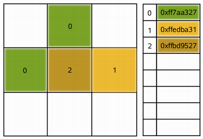

QImage Class
The QImage class provides a hardware-independent image representation that allows direct access to the pixel data, and can be used as a paint device. More...
| Header: | #include <QImage> |
| CMake: | find_package(Qt6 REQUIRED COMPONENTS Gui) target_link_libraries(mytarget PRIVATE Qt6::Gui) |
| qmake: | QT += gui |
| Inherits: | QPaintDevice |
- List of all members, including inherited members
- QImage is part of Painting Classes and Implicitly Shared Classes.
Note: All functions in this class are reentrant.
Public Types
| enum | Format { Format_Invalid, Format_Mono, Format_MonoLSB, Format_Indexed8, Format_RGB32, …, Format_RGBA32FPx4_Premultiplied } |
| enum | InvertMode { InvertRgb, InvertRgba } |
Public Functions
| QImage() | |
| QImage(const QSize &size, QImage::Format format) | |
| QImage(int width, int height, QImage::Format format) | |
| QImage(uchar *data, int width, int height, QImage::Format format, QImageCleanupFunction cleanupFunction = nullptr, void *cleanupInfo = nullptr) | |
| QImage(const uchar *data, int width, int height, QImage::Format format, QImageCleanupFunction cleanupFunction = nullptr, void *cleanupInfo = nullptr) | |
| QImage(uchar *data, int width, int height, qsizetype bytesPerLine, QImage::Format format, QImageCleanupFunction cleanupFunction = nullptr, void *cleanupInfo = nullptr) | |
| QImage(const uchar *data, int width, int height, qsizetype bytesPerLine, QImage::Format format, QImageCleanupFunction cleanupFunction = nullptr, void *cleanupInfo = nullptr) | |
| QImage(const char *const[] xpm) | |
| QImage(const QString &fileName, const char *format = nullptr) | |
| QImage(const QImage &image) | |
| QImage(QImage &&other) | |
| virtual | ~QImage() |
| bool | allGray() const |
| void | applyColorTransform(const QColorTransform &transform) |
| int | bitPlaneCount() const |
| uchar * | bits() |
| const uchar * | bits() const |
| qsizetype | bytesPerLine() const |
| qint64 | cacheKey() const |
| QRgb | color(int i) const |
| int | colorCount() const |
| QColorSpace | colorSpace() const |
| QList<QRgb> | colorTable() const |
(since 6.4) QImage | colorTransformed(const QColorTransform &transform) const & |
(since 6.4) QImage | colorTransformed(const QColorTransform &transform) && |
| const uchar * | constBits() const |
| const uchar * | constScanLine(int i) const |
| void | convertTo(QImage::Format format, Qt::ImageConversionFlags flags = Qt::AutoColor) |
| void | convertToColorSpace(const QColorSpace &colorSpace) |
| QImage | convertToFormat(QImage::Format format, Qt::ImageConversionFlags flags = Qt::AutoColor) const & |
| QImage | convertToFormat(QImage::Format format, Qt::ImageConversionFlags flags = Qt::AutoColor) && |
| QImage | convertToFormat(QImage::Format format, const QList<QRgb> &colorTable, Qt::ImageConversionFlags flags = Qt::AutoColor) const |
(since 6.0) QImage | convertedTo(QImage::Format format, Qt::ImageConversionFlags flags = Qt::AutoColor) const & |
(since 6.0) QImage | convertedTo(QImage::Format format, Qt::ImageConversionFlags flags = Qt::AutoColor) && |
| QImage | convertedToColorSpace(const QColorSpace &colorSpace) const |
| QImage | copy(const QRect &rectangle = QRect()) const |
| QImage | copy(int x, int y, int width, int height) const |
| QImage | createAlphaMask(Qt::ImageConversionFlags flags = Qt::AutoColor) const |
| QImage | createHeuristicMask(bool clipTight = true) const |
| QImage | createMaskFromColor(QRgb color, Qt::MaskMode mode = Qt::MaskInColor) const |
| int | depth() const |
(since 6.2) QSizeF | deviceIndependentSize() const |
| qreal | devicePixelRatio() const |
| int | dotsPerMeterX() const |
| int | dotsPerMeterY() const |
| void | fill(uint pixelValue) |
| void | fill(const QColor &color) |
| void | fill(Qt::GlobalColor color) |
| QImage::Format | format() const |
| bool | hasAlphaChannel() const |
| int | height() const |
| void | invertPixels(QImage::InvertMode mode = InvertRgb) |
| bool | isGrayscale() const |
| bool | isNull() const |
| bool | load(const QString &fileName, const char *format = nullptr) |
| bool | load(QIODevice *device, const char *format) |
(since 6.2) bool | loadFromData(QByteArrayView data, const char *format = nullptr) |
| bool | loadFromData(const uchar *data, int len, const char *format = nullptr) |
| bool | loadFromData(const QByteArray &data, const char *format = nullptr) |
(since 6.0) void | mirror(bool horizontal = false, bool vertical = true) |
| QImage | mirrored(bool horizontal = false, bool vertical = true) const & |
| QImage | mirrored(bool horizontal = false, bool vertical = true) && |
| QPoint | offset() const |
| QRgb | pixel(const QPoint &position) const |
| QRgb | pixel(int x, int y) const |
| QColor | pixelColor(const QPoint &position) const |
| QColor | pixelColor(int x, int y) const |
| QPixelFormat | pixelFormat() const |
| int | pixelIndex(const QPoint &position) const |
| int | pixelIndex(int x, int y) const |
| QRect | rect() const |
| bool | reinterpretAsFormat(QImage::Format format) |
(since 6.0) void | rgbSwap() |
| QImage | rgbSwapped() const & |
| QImage | rgbSwapped() && |
| bool | save(const QString &fileName, const char *format = nullptr, int quality = -1) const |
| bool | save(QIODevice *device, const char *format = nullptr, int quality = -1) const |
| QImage | scaled(const QSize &size, Qt::AspectRatioMode aspectRatioMode = Qt::IgnoreAspectRatio, Qt::TransformationMode transformMode = Qt::FastTransformation) const |
| QImage | scaled(int width, int height, Qt::AspectRatioMode aspectRatioMode = Qt::IgnoreAspectRatio, Qt::TransformationMode transformMode = Qt::FastTransformation) const |
| QImage | scaledToHeight(int height, Qt::TransformationMode mode = Qt::FastTransformation) const |
| QImage | scaledToWidth(int width, Qt::TransformationMode mode = Qt::FastTransformation) const |
| uchar * | scanLine(int i) |
| const uchar * | scanLine(int i) const |
| void | setAlphaChannel(const QImage &alphaChannel) |
| void | setColor(int index, QRgb colorValue) |
| void | setColorCount(int colorCount) |
| void | setColorSpace(const QColorSpace &colorSpace) |
| void | setColorTable(const QList<QRgb> &colors) |
| void | setDevicePixelRatio(qreal scaleFactor) |
| void | setDotsPerMeterX(int x) |
| void | setDotsPerMeterY(int y) |
| void | setOffset(const QPoint &offset) |
| void | setPixel(const QPoint &position, uint index_or_rgb) |
| void | setPixel(int x, int y, uint index_or_rgb) |
| void | setPixelColor(const QPoint &position, const QColor &color) |
| void | setPixelColor(int x, int y, const QColor &color) |
| void | setText(const QString &key, const QString &text) |
| QSize | size() const |
| qsizetype | sizeInBytes() const |
| void | swap(QImage &other) |
| QString | text(const QString &key = QString()) const |
| QStringList | textKeys() const |
| CGImageRef | toCGImage() const |
(since 6.0) HBITMAP | toHBITMAP() const |
(since 6.0) HICON | toHICON(const QImage &mask = {}) const |
| QImage | transformed(const QTransform &matrix, Qt::TransformationMode mode = Qt::FastTransformation) const |
| bool | valid(const QPoint &pos) const |
| bool | valid(int x, int y) const |
| int | width() const |
| QVariant | operator QVariant() const |
| bool | operator!=(const QImage &image) const |
| QImage & | operator=(const QImage &image) |
| QImage & | operator=(QImage &&other) |
| bool | operator==(const QImage &image) const |
Static Public Members
(since 6.2) QImage | fromData(QByteArrayView data, const char *format = nullptr) |
| QImage | fromData(const uchar *data, int size, const char *format = nullptr) |
| QImage | fromData(const QByteArray &data, const char *format = nullptr) |
(since 6.0) QImage | fromHBITMAP(HBITMAP hbitmap) |
(since 6.0) QImage | fromHICON(HICON icon) |
| QImage::Format | toImageFormat(QPixelFormat format) |
| QPixelFormat | toPixelFormat(QImage::Format format) |
| QTransform | trueMatrix(const QTransform &matrix, int width, int height) |
Related Non-Members
| QImageCleanupFunction | |
| QDataStream & | operator<<(QDataStream &stream, const QImage &image) |
| QDataStream & | operator>>(QDataStream &stream, QImage &image) |
Detailed Description
Qt provides four classes for handling image data: QImage, QPixmap, QBitmap and QPicture. QImage is designed and optimized for I/O, and for direct pixel access and manipulation, while QPixmap is designed and optimized for showing images on screen. QBitmap is only a convenience class that inherits QPixmap, ensuring a depth of 1. Finally, the QPicture class is a paint device that records and replays QPainter commands.
Because QImage is a QPaintDevice subclass, QPainter can be used to draw directly onto images. When using QPainter on a QImage, the painting can be performed in another thread than the current GUI thread.
The QImage class supports several image formats described by the Format enum. These include monochrome, 8-bit, 32-bit and alpha-blended images which are available in all versions of Qt 4.x.
QImage provides a collection of functions that can be used to obtain a variety of information about the image. There are also several functions that enables transformation of the image.
QImage objects can be passed around by value since the QImage class uses implicit data sharing. QImage objects can also be streamed and compared.
Note: If you would like to load QImage objects in a static build of Qt, refer to the Plugin HowTo.
Warning: Painting on a QImage with the format QImage::Format_Indexed8 is not supported.
Reading and Writing Image Files
QImage provides several ways of loading an image file: The file can be loaded when constructing the QImage object, or by using the load() or loadFromData() functions later on. QImage also provides the static fromData() function, constructing a QImage from the given data. When loading an image, the file name can either refer to an actual file on disk or to one of the application's embedded resources. See The Qt Resource System overview for details on how to embed images and other resource files in the application's executable.
Simply call the save() function to save a QImage object.
The complete list of supported file formats are available through the QImageReader::supportedImageFormats() and QImageWriter::supportedImageFormats() functions. New file formats can be added as plugins. By default, Qt supports the following formats:
| Format | Description | Qt's support |
|---|---|---|
| BMP | Windows Bitmap | Read/write |
| GIF | Graphic Interchange Format (optional) | Read |
| JPG | Joint Photographic Experts Group | Read/write |
| JPEG | Joint Photographic Experts Group | Read/write |
| PNG | Portable Network Graphics | Read/write |
| PBM | Portable Bitmap | Read |
| PGM | Portable Graymap | Read |
| PPM | Portable Pixmap | Read/write |
| XBM | X11 Bitmap | Read/write |
| XPM | X11 Pixmap | Read/write |
Image Information
QImage provides a collection of functions that can be used to obtain a variety of information about the image:
| Available Functions | |
|---|---|
| Geometry | The size(), width(), height(), dotsPerMeterX(), and dotsPerMeterY() functions provide information about the image size and aspect ratio. The rect() function returns the image's enclosing rectangle. The valid() function tells if a given pair of coordinates is within this rectangle. The offset() function returns the number of pixels by which the image is intended to be offset by when positioned relative to other images, which also can be manipulated using the setOffset() function. |
| Colors | The color of a pixel can be retrieved by passing its coordinates to the pixel() function. The pixel() function returns the color as a QRgb value independent of the image's format. In case of monochrome and 8-bit images, the colorCount() and colorTable() functions provide information about the color components used to store the image data: The colorTable() function returns the image's entire color table. To obtain a single entry, use the pixelIndex() function to retrieve the pixel index for a given pair of coordinates, then use the color() function to retrieve the color. Note that if you create an 8-bit image manually, you have to set a valid color table on the image as well. The hasAlphaChannel() function tells if the image's format respects the alpha channel, or not. The allGray() and isGrayscale() functions tell whether an image's colors are all shades of gray. See also the Pixel Manipulation and Image Transformations sections. |
| Text | The text() function returns the image text associated with the given text key. An image's text keys can be retrieved using the textKeys() function. Use the setText() function to alter an image's text. |
| Low-level information | The depth() function returns the depth of the image. The supported depths are 1 (monochrome), 8, 16, 24 and 32 bits. The bitPlaneCount() function tells how many of those bits that are used. For more information see the Image Formats section. The format(), bytesPerLine(), and sizeInBytes() functions provide low-level information about the data stored in the image. The cacheKey() function returns a number that uniquely identifies the contents of this QImage object. |
Pixel Manipulation
The functions used to manipulate an image's pixels depend on the image format. The reason is that monochrome and 8-bit images are index-based and use a color lookup table, while 32-bit images store ARGB values directly. For more information on image formats, see the Image Formats section.
In case of a 32-bit image, the setPixel() function can be used to alter the color of the pixel at the given coordinates to any other color specified as an ARGB quadruplet. To make a suitable QRgb value, use the qRgb() (adding a default alpha component to the given RGB values, i.e. creating an opaque color) or qRgba() function. For example:
| 32-bit | |
|---|---|
 | QImage image(3, 3, QImage::Format_RGB32); QRgb value; value = qRgb(189, 149, 39); // 0xffbd9527 image.setPixel(1, 1, value); value = qRgb(122, 163, 39); // 0xff7aa327 image.setPixel(0, 1, value); image.setPixel(1, 0, value); value = qRgb(237, 187, 51); // 0xffedba31 image.setPixel(2, 1, value); |
In case of a 8-bit and monchrome images, the pixel value is only an index from the image's color table. So the setPixel() function can only be used to alter the color of the pixel at the given coordinates to a predefined color from the image's color table, i.e. it can only change the pixel's index value. To alter or add a color to an image's color table, use the setColor() function.
An entry in the color table is an ARGB quadruplet encoded as an QRgb value. Use the qRgb() and qRgba() functions to make a suitable QRgb value for use with the setColor() function. For example:
| 8-bit | |
|---|---|
|  | QImage image(3, 3, QImage::Format_Indexed8); QRgb value; value = qRgb(122, 163, 39); // 0xff7aa327 image.setColor(0, value); value = qRgb(237, 187, 51); // 0xffedba31 image.setColor(1, value); value = qRgb(189, 149, 39); // 0xffbd9527 image.setColor(2, value); image.setPixel(0, 1, 0); image.setPixel(1, 0, 0); image.setPixel(1, 1, 2); image.setPixel(2, 1, 1); |
For images with more than 8-bit per color-channel. The methods setPixelColor() and pixelColor() can be used to set and get with QColor values.
QImage also provide the scanLine() function which returns a pointer to the pixel data at the scanline with the given index, and the bits() function which returns a pointer to the first pixel data (this is equivalent to scanLine(0)).
Image Formats
Each pixel stored in a QImage is represented by an integer. The size of the integer varies depending on the format. QImage supports several image formats described by the Format enum.
Monochrome images are stored using 1-bit indexes into a color table with at most two colors. There are two different types of monochrome images: big endian (MSB first) or little endian (LSB first) bit order.
8-bit images are stored using 8-bit indexes into a color table, i.e. they have a single byte per pixel. The color table is a QList<QRgb>, and the QRgb typedef is equivalent to an unsigned int containing an ARGB quadruplet on the format 0xAARRGGBB.
32-bit images have no color table; instead, each pixel contains an QRgb value. There are three different types of 32-bit images storing RGB (i.e. 0xffRRGGBB), ARGB and premultiplied ARGB values respectively. In the premultiplied format the red, green, and blue channels are multiplied by the alpha component divided by 255.
An image's format can be retrieved using the format() function. Use the convertToFormat() functions to convert an image into another format. The allGray() and isGrayscale() functions tell whether a color image can safely be converted to a grayscale image.
Image Transformations
QImage supports a number of functions for creating a new image that is a transformed version of the original: The createAlphaMask() function builds and returns a 1-bpp mask from the alpha buffer in this image, and the createHeuristicMask() function creates and returns a 1-bpp heuristic mask for this image. The latter function works by selecting a color from one of the corners, then chipping away pixels of that color starting at all the edges.
The mirrored() function returns a mirror of the image in the desired direction, the scaled() returns a copy of the image scaled to a rectangle of the desired measures, and the rgbSwapped() function constructs a BGR image from a RGB image.
The scaledToWidth() and scaledToHeight() functions return scaled copies of the image.
The transformed() function returns a copy of the image that is transformed with the given transformation matrix and transformation mode: Internally, the transformation matrix is adjusted to compensate for unwanted translation, i.e. transformed() returns the smallest image containing all transformed points of the original image. The static trueMatrix() function returns the actual matrix used for transforming the image.
There are also functions for changing attributes of an image in-place:
| Function | Description |
|---|---|
| setDotsPerMeterX() | Defines the aspect ratio by setting the number of pixels that fit horizontally in a physical meter. |
| setDotsPerMeterY() | Defines the aspect ratio by setting the number of pixels that fit vertically in a physical meter. |
| fill() | Fills the entire image with the given pixel value. |
| invertPixels() | Inverts all pixel values in the image using the given InvertMode value. |
| setColorTable() | Sets the color table used to translate color indexes. Only monochrome and 8-bit formats. |
| setColorCount() | Resizes the color table. Only monochrome and 8-bit formats. |
See also QImageReader, QImageWriter, QPixmap, QSvgRenderer, Image Composition Example, and Scribble Example.
Member Type Documentation
enum QImage::Format
The following image formats are available in Qt. See the notes after the table.
| Constant | Value | Description |
|---|---|---|
QImage::Format_Invalid | 0 | The image is invalid. |
QImage::Format_Mono | 1 | The image is stored using 1-bit per pixel. Bytes are packed with the most significant bit (MSB) first. |
QImage::Format_MonoLSB | 2 | The image is stored using 1-bit per pixel. Bytes are packed with the less significant bit (LSB) first. |
QImage::Format_Indexed8 | 3 | The image is stored using 8-bit indexes into a colormap. |
QImage::Format_RGB32 | 4 | The image is stored using a 32-bit RGB format (0xffRRGGBB). |
QImage::Format_ARGB32 | 5 | The image is stored using a 32-bit ARGB format (0xAARRGGBB). |
QImage::Format_ARGB32_Premultiplied | 6 | The image is stored using a premultiplied 32-bit ARGB format (0xAARRGGBB), i.e. the red, green, and blue channels are multiplied by the alpha component divided by 255. (If RR, GG, or BB has a higher value than the alpha channel, the results are undefined.) Certain operations (such as image composition using alpha blending) are faster using premultiplied ARGB32 than with plain ARGB32. |
QImage::Format_RGB16 | 7 | The image is stored using a 16-bit RGB format (5-6-5). |
QImage::Format_ARGB8565_Premultiplied | 8 | The image is stored using a premultiplied 24-bit ARGB format (8-5-6-5). |
QImage::Format_RGB666 | 9 | The image is stored using a 24-bit RGB format (6-6-6). The unused most significant bits is always zero. |
QImage::Format_ARGB6666_Premultiplied | 10 | The image is stored using a premultiplied 24-bit ARGB format (6-6-6-6). |
QImage::Format_RGB555 | 11 | The image is stored using a 16-bit RGB format (5-5-5). The unused most significant bit is always zero. |
QImage::Format_ARGB8555_Premultiplied | 12 | The image is stored using a premultiplied 24-bit ARGB format (8-5-5-5). |
QImage::Format_RGB888 | 13 | The image is stored using a 24-bit RGB format (8-8-8). |
QImage::Format_RGB444 | 14 | The image is stored using a 16-bit RGB format (4-4-4). The unused bits are always zero. |
QImage::Format_ARGB4444_Premultiplied | 15 | The image is stored using a premultiplied 16-bit ARGB format (4-4-4-4). |
QImage::Format_RGBX8888 | 16 | The image is stored using a 32-bit byte-ordered RGB(x) format (8-8-8-8). This is the same as the Format_RGBA8888 except alpha must always be 255. (added in Qt 5.2) |
QImage::Format_RGBA8888 | 17 | The image is stored using a 32-bit byte-ordered RGBA format (8-8-8-8). Unlike ARGB32 this is a byte-ordered format, which means the 32bit encoding differs between big endian and little endian architectures, being respectively (0xRRGGBBAA) and (0xAABBGGRR). The order of the colors is the same on any architecture if read as bytes 0xRR,0xGG,0xBB,0xAA. (added in Qt 5.2) |
QImage::Format_RGBA8888_Premultiplied | 18 | The image is stored using a premultiplied 32-bit byte-ordered RGBA format (8-8-8-8). (added in Qt 5.2) |
QImage::Format_BGR30 | 19 | The image is stored using a 32-bit BGR format (x-10-10-10). (added in Qt 5.4) |
QImage::Format_A2BGR30_Premultiplied | 20 | The image is stored using a 32-bit premultiplied ABGR format (2-10-10-10). (added in Qt 5.4) |
QImage::Format_RGB30 | 21 | The image is stored using a 32-bit RGB format (x-10-10-10). (added in Qt 5.4) |
QImage::Format_A2RGB30_Premultiplied | 22 | The image is stored using a 32-bit premultiplied ARGB format (2-10-10-10). (added in Qt 5.4) |
QImage::Format_Alpha8 | 23 | The image is stored using an 8-bit alpha only format. (added in Qt 5.5) |
QImage::Format_Grayscale8 | 24 | The image is stored using an 8-bit grayscale format. (added in Qt 5.5) |
QImage::Format_Grayscale16 | 28 | The image is stored using an 16-bit grayscale format. (added in Qt 5.13) |
QImage::Format_RGBX64 | 25 | The image is stored using a 64-bit halfword-ordered RGB(x) format (16-16-16-16). This is the same as the Format_RGBA64 except alpha must always be 65535. (added in Qt 5.12) |
QImage::Format_RGBA64 | 26 | The image is stored using a 64-bit halfword-ordered RGBA format (16-16-16-16). (added in Qt 5.12) |
QImage::Format_RGBA64_Premultiplied | 27 | The image is stored using a premultiplied 64-bit halfword-ordered RGBA format (16-16-16-16). (added in Qt 5.12) |
QImage::Format_BGR888 | 29 | The image is stored using a 24-bit BGR format. (added in Qt 5.14) |
QImage::Format_RGBX16FPx4 | 30 | The image is stored using a 4 16-bit halfword floating point RGBx format (16FP-16FP-16FP-16FP). This is the same as the Format_RGBA16FPx4 except alpha must always be 1.0. (added in Qt 6.2) |
QImage::Format_RGBA16FPx4 | 31 | The image is stored using a 4 16-bit halfword floating point RGBA format (16FP-16FP-16FP-16FP). (added in Qt 6.2) |
QImage::Format_RGBA16FPx4_Premultiplied | 32 | The image is stored using a premultiplied 4 16-bit halfword floating point RGBA format (16FP-16FP-16FP-16FP). (added in Qt 6.2) |
QImage::Format_RGBX32FPx4 | 33 | The image is stored using a 4 32-bit floating point RGBx format (32FP-32FP-32FP-32FP). This is the same as the Format_RGBA32FPx4 except alpha must always be 1.0. (added in Qt 6.2) |
QImage::Format_RGBA32FPx4 | 34 | The image is stored using a 4 32-bit floating point RGBA format (32FP-32FP-32FP-32FP). (added in Qt 6.2) |
QImage::Format_RGBA32FPx4_Premultiplied | 35 | The image is stored using a premultiplied 4 32-bit floating point RGBA format (32FP-32FP-32FP-32FP). (added in Qt 6.2) |
Note: Drawing into a QImage with QImage::Format_Indexed8 is not supported.
Note: Avoid most rendering directly to most of these formats using QPainter. Rendering is best optimized to the Format_RGB32 and Format_ARGB32_Premultiplied formats, and secondarily for rendering to the Format_RGB16, Format_RGBX8888, Format_RGBA8888_Premultiplied, Format_RGBX64 and Format_RGBA64_Premultiplied formats
See also format() and convertToFormat().
enum QImage::InvertMode
This enum type is used to describe how pixel values should be inverted in the invertPixels() function.
| Constant | Value | Description |
|---|---|---|
QImage::InvertRgb | 0 | Invert only the RGB values and leave the alpha channel unchanged. |
QImage::InvertRgba | 1 | Invert all channels, including the alpha channel. |
See also invertPixels().
Member Function Documentation
QImage QImage::convertToFormat(QImage::Format format, Qt::ImageConversionFlags flags = Qt::AutoColor) &&
QImage QImage::convertToFormat(QImage::Format format, Qt::ImageConversionFlags flags = Qt::AutoColor) const &
Returns a copy of the image in the given format.
The specified image conversion flags control how the image data is handled during the conversion process.
See also convertTo() and Image Formats.
[since 6.0] QImage QImage::convertedTo(QImage::Format format, Qt::ImageConversionFlags flags = Qt::AutoColor) &&
[since 6.0] QImage QImage::convertedTo(QImage::Format format, Qt::ImageConversionFlags flags = Qt::AutoColor) const &
Returns a copy of the image in the given format.
The specified image conversion flags control how the image data is handled during the conversion process.
This function was introduced in Qt 6.0.
See also convertTo() and Image Formats.
QImage QImage::mirrored(bool horizontal = false, bool vertical = true) &&
QImage QImage::mirrored(bool horizontal = false, bool vertical = true) const &
Returns a mirror of the image, mirrored in the horizontal and/or the vertical direction depending on whether horizontal and vertical are set to true or false.
Note that the original image is not changed.
See also mirror() and Image Transformations.
Returns a QImage in which the values of the red and blue components of all pixels have been swapped, effectively converting an RGB image to an BGR image.
The original QImage is not changed.
See also rgbSwap() and Image Transformations.
[noexcept] QImage::QImage()
Constructs a null image.
See also isNull().
QImage::QImage(const QSize &size, QImage::Format format)
Constructs an image with the given size and format.
A null image is returned if memory cannot be allocated.
Warning: This will create a QImage with uninitialized data. Call fill() to fill the image with an appropriate pixel value before drawing onto it with QPainter.
QImage::QImage(int width, int height, QImage::Format format)
Constructs an image with the given width, height and format.
A null image will be returned if memory cannot be allocated.
Warning: This will create a QImage with uninitialized data. Call fill() to fill the image with an appropriate pixel value before drawing onto it with QPainter.
QImage::QImage(uchar *data, int width, int height, QImage::Format format, QImageCleanupFunction cleanupFunction = nullptr, void *cleanupInfo = nullptr)
Constructs an image with the given width, height and format, that uses an existing memory buffer, data. The width and height must be specified in pixels, data must be 32-bit aligned, and each scanline of data in the image must also be 32-bit aligned.
The buffer must remain valid throughout the life of the QImage and all copies that have not been modified or otherwise detached from the original buffer. The image does not delete the buffer at destruction. You can provide a function pointer cleanupFunction along with an extra pointer cleanupInfo that will be called when the last copy is destroyed.
If format is an indexed color format, the image color table is initially empty and must be sufficiently expanded with setColorCount() or setColorTable() before the image is used.
QImage::QImage(const uchar *data, int width, int height, QImage::Format format, QImageCleanupFunction cleanupFunction = nullptr, void *cleanupInfo = nullptr)
Constructs an image with the given width, height and format, that uses an existing read-only memory buffer, data. The width and height must be specified in pixels, data must be 32-bit aligned, and each scanline of data in the image must also be 32-bit aligned.
The buffer must remain valid throughout the life of the QImage and all copies that have not been modified or otherwise detached from the original buffer. The image does not delete the buffer at destruction. You can provide a function pointer cleanupFunction along with an extra pointer cleanupInfo that will be called when the last copy is destroyed.
If format is an indexed color format, the image color table is initially empty and must be sufficiently expanded with setColorCount() or setColorTable() before the image is used.
Unlike the similar QImage constructor that takes a non-const data buffer, this version will never alter the contents of the buffer. For example, calling QImage::bits() will return a deep copy of the image, rather than the buffer passed to the constructor. This allows for the efficiency of constructing a QImage from raw data, without the possibility of the raw data being changed.
QImage::QImage(uchar *data, int width, int height, qsizetype bytesPerLine, QImage::Format format, QImageCleanupFunction cleanupFunction = nullptr, void *cleanupInfo = nullptr)
Constructs an image with the given width, height and format, that uses an existing memory buffer, data. The width and height must be specified in pixels. bytesPerLine specifies the number of bytes per line (stride).
The buffer must remain valid throughout the life of the QImage and all copies that have not been modified or otherwise detached from the original buffer. The image does not delete the buffer at destruction. You can provide a function pointer cleanupFunction along with an extra pointer cleanupInfo that will be called when the last copy is destroyed.
If format is an indexed color format, the image color table is initially empty and must be sufficiently expanded with setColorCount() or setColorTable() before the image is used.
QImage::QImage(const uchar *data, int width, int height, qsizetype bytesPerLine, QImage::Format format, QImageCleanupFunction cleanupFunction = nullptr, void *cleanupInfo = nullptr)
Constructs an image with the given width, height and format, that uses an existing memory buffer, data. The width and height must be specified in pixels. bytesPerLine specifies the number of bytes per line (stride).
The buffer must remain valid throughout the life of the QImage and all copies that have not been modified or otherwise detached from the original buffer. The image does not delete the buffer at destruction. You can provide a function pointer cleanupFunction along with an extra pointer cleanupInfo that will be called when the last copy is destroyed.
If format is an indexed color format, the image color table is initially empty and must be sufficiently expanded with setColorCount() or setColorTable() before the image is used.
Unlike the similar QImage constructor that takes a non-const data buffer, this version will never alter the contents of the buffer. For example, calling QImage::bits() will return a deep copy of the image, rather than the buffer passed to the constructor. This allows for the efficiency of constructing a QImage from raw data, without the possibility of the raw data being changed.
[explicit] QImage::QImage(const char *const[] xpm)
Constructs an image from the given xpm image.
Make sure that the image is a valid XPM image. Errors are silently ignored.
Note that it's possible to squeeze the XPM variable a little bit by using an unusual declaration:
static const char * const start_xpm[] = { "16 15 8 1", "a c #cec6bd", // etc. };
The extra const makes the entire definition read-only, which is slightly more efficient (e.g., when the code is in a shared library) and able to be stored in ROM with the application.
[explicit] QImage::QImage(const QString &fileName, const char *format = nullptr)
Constructs an image and tries to load the image from the file with the given fileName.
The loader attempts to read the image using the specified format. If the format is not specified (which is the default), it is auto-detected based on the file's suffix and header. For details, see {QImageReader::setAutoDetectImageFormat()}{QImageReader}.
If the loading of the image failed, this object is a null image.
The file name can either refer to an actual file on disk or to one of the application's embedded resources. See the Resource System overview for details on how to embed images and other resource files in the application's executable.
See also isNull() and Reading and Writing Image Files.
QImage::QImage(const QImage &image)
Constructs a shallow copy of the given image.
For more information about shallow copies, see the Implicit Data Sharing documentation.
See also copy().
[noexcept] QImage::QImage(QImage &&other)
Move-constructs a QImage instance, making it point at the same object that other was pointing to.
[virtual noexcept] QImage::~QImage()
Destroys the image and cleans up.
bool QImage::allGray() const
Returns true if all the colors in the image are shades of gray (i.e. their red, green and blue components are equal); otherwise false.
Note that this function is slow for images without color table.
See also isGrayscale().
void QImage::applyColorTransform(const QColorTransform &transform)
Applies the color transformation transform to all pixels in the image.
int QImage::bitPlaneCount() const
Returns the number of bit planes in the image.
The number of bit planes is the number of bits of color and transparency information for each pixel. This is different from (i.e. smaller than) the depth when the image format contains unused bits.
See also depth(), format(), and Image Formats.
uchar *QImage::bits()
Returns a pointer to the first pixel data. This is equivalent to scanLine(0).
Note that QImage uses implicit data sharing. This function performs a deep copy of the shared pixel data, thus ensuring that this QImage is the only one using the current return value.
See also scanLine(), sizeInBytes(), and constBits().
const uchar *QImage::bits() const
This is an overloaded function.
Note that QImage uses implicit data sharing, but this function does not perform a deep copy of the shared pixel data, because the returned data is const.
qsizetype QImage::bytesPerLine() const
Returns the number of bytes per image scanline.
This is equivalent to sizeInBytes() / height() if height() is non-zero.
See also scanLine().
qint64 QImage::cacheKey() const
Returns a number that identifies the contents of this QImage object. Distinct QImage objects can only have the same key if they refer to the same contents.
The key will change when the image is altered.
QRgb QImage::color(int i) const
Returns the color in the color table at index i. The first color is at index 0.
The colors in an image's color table are specified as ARGB quadruplets (QRgb). Use the qAlpha(), qRed(), qGreen(), and qBlue() functions to get the color value components.
See also setColor(), pixelIndex(), and Pixel Manipulation.
int QImage::colorCount() const
Returns the size of the color table for the image.
Notice that colorCount() returns 0 for 32-bpp images because these images do not use color tables, but instead encode pixel values as ARGB quadruplets.
See also setColorCount() and Image Information.
QColorSpace QImage::colorSpace() const
Returns the color space of the image if a color space is defined.
See also setColorSpace().
QList<QRgb> QImage::colorTable() const
Returns a list of the colors contained in the image's color table, or an empty list if the image does not have a color table
See also setColorTable(), colorCount(), and color().
[since 6.4] QImage QImage::colorTransformed(const QColorTransform &transform) const &
Returns the image color transformed using transform on all pixels in the image.
This function was introduced in Qt 6.4.
See also applyColorTransform().
[since 6.4] QImage QImage::colorTransformed(const QColorTransform &transform) &&
This is an overloaded function.
Returns the image color transformed using transform on all pixels in the image.
This function was introduced in Qt 6.4.
See also applyColorTransform().
const uchar *QImage::constBits() const
Returns a pointer to the first pixel data.
Note that QImage uses implicit data sharing, but this function does not perform a deep copy of the shared pixel data, because the returned data is const.
See also bits() and constScanLine().
const uchar *QImage::constScanLine(int i) const
Returns a pointer to the pixel data at the scanline with index i. The first scanline is at index 0.
The scanline data is as minimum 32-bit aligned. For 64-bit formats it follows the native alignment of 64-bit integers (64-bit for most platforms, but notably 32-bit on i386).
Note that QImage uses implicit data sharing, but this function does not perform a deep copy of the shared pixel data, because the returned data is const.
See also scanLine() and constBits().
void QImage::convertTo(QImage::Format format, Qt::ImageConversionFlags flags = Qt::AutoColor)
Converts the image to the given format in place, detaching if necessary.
The specified image conversion flags control how the image data is handled during the conversion process.
See also convertedTo().
void QImage::convertToColorSpace(const QColorSpace &colorSpace)
Converts the image to colorSpace.
If the image has no valid color space, the method does nothing.
See also convertedToColorSpace() and setColorSpace().
QImage QImage::convertToFormat(QImage::Format format, const QList<QRgb> &colorTable, Qt::ImageConversionFlags flags = Qt::AutoColor) const
This is an overloaded function.
Returns a copy of the image converted to the given format, using the specified colorTable.
Conversion from RGB formats to indexed formats is a slow operation and will use a straightforward nearest color approach, with no dithering.
QImage QImage::convertedToColorSpace(const QColorSpace &colorSpace) const
Returns the image converted to colorSpace.
If the image has no valid color space, a null QImage is returned.
See also convertToColorSpace().
QImage QImage::copy(const QRect &rectangle = QRect()) const
Returns a sub-area of the image as a new image.
The returned image is copied from the position (rectangle.x(), rectangle.y()) in this image, and will always have the size of the given rectangle.
In areas beyond this image, pixels are set to 0. For 32-bit RGB images, this means black; for 32-bit ARGB images, this means transparent black; for 8-bit images, this means the color with index 0 in the color table which can be anything; for 1-bit images, this means Qt::color0.
If the given rectangle is a null rectangle the entire image is copied.
See also QImage().
QImage QImage::copy(int x, int y, int width, int height) const
This is an overloaded function.
The returned image is copied from the position (x, y) in this image, and will always have the given width and height. In areas beyond this image, pixels are set to 0.
QImage QImage::createAlphaMask(Qt::ImageConversionFlags flags = Qt::AutoColor) const
Builds and returns a 1-bpp mask from the alpha buffer in this image. Returns a null image if the image's format is QImage::Format_RGB32.
The flags argument is a bitwise-OR of the Qt::ImageConversionFlags, and controls the conversion process. Passing 0 for flags sets all the default options.
The returned image has little-endian bit order (i.e. the image's format is QImage::Format_MonoLSB), which you can convert to big-endian (QImage::Format_Mono) using the convertToFormat() function.
See also createHeuristicMask() and Image Transformations.
QImage QImage::createHeuristicMask(bool clipTight = true) const
Creates and returns a 1-bpp heuristic mask for this image.
The function works by selecting a color from one of the corners, then chipping away pixels of that color starting at all the edges. The four corners vote for which color is to be masked away. In case of a draw (this generally means that this function is not applicable to the image), the result is arbitrary.
The returned image has little-endian bit order (i.e. the image's format is QImage::Format_MonoLSB), which you can convert to big-endian (QImage::Format_Mono) using the convertToFormat() function.
If clipTight is true (the default) the mask is just large enough to cover the pixels; otherwise, the mask is larger than the data pixels.
Note that this function disregards the alpha buffer.
See also createAlphaMask() and Image Transformations.
QImage QImage::createMaskFromColor(QRgb color, Qt::MaskMode mode = Qt::MaskInColor) const
Creates and returns a mask for this image based on the given color value. If the mode is MaskInColor (the default value), all pixels matching color will be opaque pixels in the mask. If mode is MaskOutColor, all pixels matching the given color will be transparent.
See also createAlphaMask() and createHeuristicMask().
int QImage::depth() const
Returns the depth of the image.
The image depth is the number of bits used to store a single pixel, also called bits per pixel (bpp).
The supported depths are 1, 8, 16, 24, 32 and 64.
See also bitPlaneCount(), convertToFormat(), Image Formats, and Image Information.
[since 6.2] QSizeF QImage::deviceIndependentSize() const
Returns the size of the image in device independent pixels.
This value should be used when using the image size in user interface size calculations.
The return value is equivalent to image.size() / image.devicePixelRatio().
This function was introduced in Qt 6.2.
qreal QImage::devicePixelRatio() const
Returns the device pixel ratio for the image. This is the ratio between device pixels and device independent pixels.
Use this function when calculating layout geometry based on the image size: QSize layoutSize = image.size() / image.devicePixelRatio()
The default value is 1.0.
See also setDevicePixelRatio() and QImageReader.
int QImage::dotsPerMeterX() const
Returns the number of pixels that fit horizontally in a physical meter. Together with dotsPerMeterY(), this number defines the intended scale and aspect ratio of the image.
See also setDotsPerMeterX() and Image Information.
int QImage::dotsPerMeterY() const
Returns the number of pixels that fit vertically in a physical meter. Together with dotsPerMeterX(), this number defines the intended scale and aspect ratio of the image.
See also setDotsPerMeterY() and Image Information.
void QImage::fill(uint pixelValue)
Fills the entire image with the given pixelValue.
If the depth of this image is 1, only the lowest bit is used. If you say fill(0), fill(2), etc., the image is filled with 0s. If you say fill(1), fill(3), etc., the image is filled with 1s. If the depth is 8, the lowest 8 bits are used and if the depth is 16 the lowest 16 bits are used.
If the image depth is higher than 32bit the result is undefined.
Note: There are no corresponding value getter, though QImage::pixelIndex() will return the same value for indexed formats, and QImage::pixel() for RGB32, ARGB32, and ARGB32PM formats.
See also depth() and Image Transformations.
void QImage::fill(const QColor &color)
This is an overloaded function.
Fills the entire image with the given color.
If the depth of the image is 1, the image will be filled with 1 if color equals Qt::color1; it will otherwise be filled with 0.
If the depth of the image is 8, the image will be filled with the index corresponding the color in the color table if present; it will otherwise be filled with 0.
void QImage::fill(Qt::GlobalColor color)
This is an overloaded function.
Fills the image with the given color, described as a standard global color.
QImage::Format QImage::format() const
Returns the format of the image.
See also Image Formats.
[static, since 6.2] QImage QImage::fromData(QByteArrayView data, const char *format = nullptr)
Constructs an image from the given QByteArrayView data. The loader attempts to read the image using the specified format. If format is not specified (which is the default), the loader probes the data for a header to guess the file format.
If format is specified, it must be one of the values returned by QImageReader::supportedImageFormats().
If the loading of the image fails, the image returned will be a null image.
This function was introduced in Qt 6.2.
See also load(), save(), and Reading and Writing Image Files.
[static] QImage QImage::fromData(const uchar *data, int size, const char *format = nullptr)
This is an overloaded function.
Constructs a QImage from the first size bytes of the given binary data.
[static] QImage QImage::fromData(const QByteArray &data, const char *format = nullptr)
This is an overloaded function.
Constructs a QImage from the given QByteArray data.
[static, since 6.0] QImage QImage::fromHBITMAP(HBITMAP hbitmap)
Returns a QImage that is equivalent to the given hbitmap.
HBITMAP does not store information about the alpha channel.
In the standard case, the alpha channel is ignored and a fully opaque image is created (typically of format QImage::Format_RGB32).
There are cases where the alpha channel is used, though, for example for application icon or systray icons. In that case, reinterpretAsFormat(QImage::Format_ARGB32) should be called on the returned image to ensure the format is correct.
This function was introduced in Qt 6.0.
See also toHBITMAP() and reinterpretAsFormat().
[static, since 6.0] QImage QImage::fromHICON(HICON icon)
Returns a QImage that is equivalent to the given icon.
This function was introduced in Qt 6.0.
See also toHICON().
bool QImage::hasAlphaChannel() const
Returns true if the image has a format that respects the alpha channel, otherwise returns false.
See also Image Information.
int QImage::height() const
Returns the height of the image.
See also Image Information.
void QImage::invertPixels(QImage::InvertMode mode = InvertRgb)
Inverts all pixel values in the image.
The given invert mode only have a meaning when the image's depth is 32. The default mode is InvertRgb, which leaves the alpha channel unchanged. If the mode is InvertRgba, the alpha bits are also inverted.
Inverting an 8-bit image means to replace all pixels using color index i with a pixel using color index 255 minus i. The same is the case for a 1-bit image. Note that the color table is not changed.
If the image has a premultiplied alpha channel, the image is first converted to an unpremultiplied image format to be inverted and then converted back.
See also Image Transformations.
bool QImage::isGrayscale() const
For 32-bit images, this function is equivalent to allGray().
For color indexed images, this function returns true if color(i) is QRgb(i, i, i) for all indexes of the color table; otherwise returns false.
See also allGray() and Image Formats.
bool QImage::isNull() const
Returns true if it is a null image, otherwise returns false.
A null image has all parameters set to zero and no allocated data.
bool QImage::load(const QString &fileName, const char *format = nullptr)
Loads an image from the file with the given fileName. Returns true if the image was successfully loaded; otherwise invalidates the image and returns false.
The loader attempts to read the image using the specified format, e.g., PNG or JPG. If format is not specified (which is the default), it is auto-detected based on the file's suffix and header. For details, see QImageReader::setAutoDetectImageFormat().
The file name can either refer to an actual file on disk or to one of the application's embedded resources. See the Resource System overview for details on how to embed images and other resource files in the application's executable.
See also Reading and Writing Image Files.
bool QImage::load(QIODevice *device, const char *format)
This is an overloaded function.
This function reads a QImage from the given device. This can, for example, be used to load an image directly into a QByteArray.
[since 6.2] bool QImage::loadFromData(QByteArrayView data, const char *format = nullptr)
Loads an image from the given QByteArrayView data. Returns true if the image was successfully loaded; otherwise invalidates the image and returns false.
The loader attempts to read the image using the specified format, e.g., PNG or JPG. If format is not specified (which is the default), the loader probes the file for a header to guess the file format.
This function was introduced in Qt 6.2.
See also Reading and Writing Image Files.
bool QImage::loadFromData(const uchar *data, int len, const char *format = nullptr)
This is an overloaded function.
Loads an image from the first len bytes of the given binary data.
bool QImage::loadFromData(const QByteArray &data, const char *format = nullptr)
This is an overloaded function.
Loads an image from the given QByteArray data.
[since 6.0] void QImage::mirror(bool horizontal = false, bool vertical = true)
Mirrors of the image in the horizontal and/or the vertical direction depending on whether horizontal and vertical are set to true or false.
This function was introduced in Qt 6.0.
See also mirrored() and Image Transformations.
QPoint QImage::offset() const
Returns the number of pixels by which the image is intended to be offset by when positioning relative to other images.
See also setOffset() and Image Information.
QRgb QImage::pixel(const QPoint &position) const
Returns the color of the pixel at the given position.
If the position is not valid, the results are undefined.
Warning: This function is expensive when used for massive pixel manipulations. Use constBits() or constScanLine() when many pixels needs to be read.
See also setPixel(), valid(), constBits(), constScanLine(), and Pixel Manipulation.
QRgb QImage::pixel(int x, int y) const
This is an overloaded function.
Returns the color of the pixel at coordinates (x, y).
QColor QImage::pixelColor(const QPoint &position) const
Returns the color of the pixel at the given position as a QColor.
If the position is not valid, an invalid QColor is returned.
Warning: This function is expensive when used for massive pixel manipulations. Use constBits() or constScanLine() when many pixels needs to be read.
See also setPixelColor(), setPixel(), valid(), constBits(), constScanLine(), and Pixel Manipulation.
QColor QImage::pixelColor(int x, int y) const
This is an overloaded function.
Returns the color of the pixel at coordinates (x, y) as a QColor.
[noexcept] QPixelFormat QImage::pixelFormat() const
Returns the QImage::Format as a QPixelFormat
int QImage::pixelIndex(const QPoint &position) const
Returns the pixel index at the given position.
If position is not valid, or if the image is not a paletted image (depth() > 8), the results are undefined.
See also valid(), depth(), and Pixel Manipulation.
int QImage::pixelIndex(int x, int y) const
This is an overloaded function.
Returns the pixel index at (x, y).
QRect QImage::rect() const
Returns the enclosing rectangle (0, 0, width(), height()) of the image.
See also Image Information.
bool QImage::reinterpretAsFormat(QImage::Format format)
Changes the format of the image to format without changing the data. Only works between formats of the same depth.
Returns true if successful.
This function can be used to change images with alpha-channels to their corresponding opaque formats if the data is known to be opaque-only, or to change the format of a given image buffer before overwriting it with new data.
Warning: The function does not check if the image data is valid in the new format and will still return true if the depths are compatible. Operations on an image with invalid data are undefined.
Warning: If the image is not detached, this will cause the data to be copied.
See also hasAlphaChannel() and convertToFormat().
[since 6.0] void QImage::rgbSwap()
Swaps the values of the red and blue components of all pixels, effectively converting an RGB image to an BGR image.
This function was introduced in Qt 6.0.
See also rgbSwapped() and Image Transformations.
bool QImage::save(const QString &fileName, const char *format = nullptr, int quality = -1) const
Saves the image to the file with the given fileName, using the given image file format and quality factor. If format is nullptr, QImage will attempt to guess the format by looking at fileName's suffix.
The quality factor must be in the range 0 to 100 or -1. Specify 0 to obtain small compressed files, 100 for large uncompressed files, and -1 (the default) to use the default settings.
Returns true if the image was successfully saved; otherwise returns false.
See also Reading and Writing Image Files.
bool QImage::save(QIODevice *device, const char *format = nullptr, int quality = -1) const
This is an overloaded function.
This function writes a QImage to the given device.
This can, for example, be used to save an image directly into a QByteArray:
QImage image; QByteArray ba; QBuffer buffer(&ba); buffer.open(QIODevice::WriteOnly); image.save(&buffer, "PNG"); // writes image into ba in PNG format
QImage QImage::scaled(const QSize &size, Qt::AspectRatioMode aspectRatioMode = Qt::IgnoreAspectRatio, Qt::TransformationMode transformMode = Qt::FastTransformation) const
Returns a copy of the image scaled to a rectangle defined by the given size according to the given aspectRatioMode and transformMode.

- If aspectRatioMode is Qt::IgnoreAspectRatio, the image is scaled to size.
- If aspectRatioMode is Qt::KeepAspectRatio, the image is scaled to a rectangle as large as possible inside size, preserving the aspect ratio.
- If aspectRatioMode is Qt::KeepAspectRatioByExpanding, the image is scaled to a rectangle as small as possible outside size, preserving the aspect ratio.
If the given size is empty, this function returns a null image.
See also isNull() and Image Transformations.
QImage QImage::scaled(int width, int height, Qt::AspectRatioMode aspectRatioMode = Qt::IgnoreAspectRatio, Qt::TransformationMode transformMode = Qt::FastTransformation) const
This is an overloaded function.
Returns a copy of the image scaled to a rectangle with the given width and height according to the given aspectRatioMode and transformMode.
If either the width or the height is zero or negative, this function returns a null image.
QImage QImage::scaledToHeight(int height, Qt::TransformationMode mode = Qt::FastTransformation) const
Returns a scaled copy of the image. The returned image is scaled to the given height using the specified transformation mode.
This function automatically calculates the width of the image so that the ratio of the image is preserved.
If the given height is 0 or negative, a null image is returned.
See also Image Transformations.
QImage QImage::scaledToWidth(int width, Qt::TransformationMode mode = Qt::FastTransformation) const
Returns a scaled copy of the image. The returned image is scaled to the given width using the specified transformation mode.
This function automatically calculates the height of the image so that its aspect ratio is preserved.
If the given width is 0 or negative, a null image is returned.
See also Image Transformations.
uchar *QImage::scanLine(int i)
Returns a pointer to the pixel data at the scanline with index i. The first scanline is at index 0.
The scanline data is as minimum 32-bit aligned. For 64-bit formats it follows the native alignment of 64-bit integers (64-bit for most platforms, but notably 32-bit on i386).
For example, to remove the green component of each pixel in an image:
for (int y = 0; y < image.height(); ++y) { QRgb *line = reinterpret_cast<QRgb*>(image.scanLine(y)); for (int x = 0; x < image.width(); ++x) { QRgb &rgb = line[x]; rgb = qRgba(qRed(rgb), qGreen(0), qBlue(rgb), qAlpha(rgb)); } }
Warning: If you are accessing 32-bpp image data, cast the returned pointer to QRgb* (QRgb has a 32-bit size) and use it to read/write the pixel value. You cannot use the uchar* pointer directly, because the pixel format depends on the byte order on the underlying platform. Use qRed(), qGreen(), qBlue(), and qAlpha() to access the pixels.
See also bytesPerLine(), bits(), Pixel Manipulation, and constScanLine().
const uchar *QImage::scanLine(int i) const
This is an overloaded function.
void QImage::setAlphaChannel(const QImage &alphaChannel)
Sets the alpha channel of this image to the given alphaChannel.
If alphaChannel is an 8 bit alpha image, the alpha values are used directly. Otherwise, alphaChannel is converted to 8 bit grayscale and the intensity of the pixel values is used.
If the image already has an alpha channel, the existing alpha channel is multiplied with the new one. If the image doesn't have an alpha channel it will be converted to a format that does.
The operation is similar to painting alphaChannel as an alpha image over this image using QPainter::CompositionMode_DestinationIn.
See also hasAlphaChannel(), Image Transformations, and Image Formats.
void QImage::setColor(int index, QRgb colorValue)
Sets the color at the given index in the color table, to the given to colorValue. The color value is an ARGB quadruplet.
If index is outside the current size of the color table, it is expanded with setColorCount().
See also color(), colorCount(), setColorTable(), and Pixel Manipulation.
void QImage::setColorCount(int colorCount)
Resizes the color table to contain colorCount entries.
If the color table is expanded, all the extra colors will be set to transparent (i.e qRgba(0, 0, 0, 0)).
When the image is used, the color table must be large enough to have entries for all the pixel/index values present in the image, otherwise the results are undefined.
See also colorCount(), colorTable(), setColor(), and Image Transformations.
void QImage::setColorSpace(const QColorSpace &colorSpace)
Sets the image color space to colorSpace without performing any conversions on image data.
See also colorSpace().
void QImage::setColorTable(const QList<QRgb> &colors)
Sets the color table used to translate color indexes to QRgb values, to the specified colors.
When the image is used, the color table must be large enough to have entries for all the pixel/index values present in the image, otherwise the results are undefined.
See also colorTable(), setColor(), and Image Transformations.
void QImage::setDevicePixelRatio(qreal scaleFactor)
Sets the device pixel ratio for the image. This is the ratio between image pixels and device-independent pixels.
The default scaleFactor is 1.0. Setting it to something else has two effects:
QPainters that are opened on the image will be scaled. For example, painting on a 200x200 image if with a ratio of 2.0 will result in effective (device-independent) painting bounds of 100x100.
Code paths in Qt that calculate layout geometry based on the image size will take the ratio into account: QSize layoutSize = image.size() / image.devicePixelRatio() The net effect of this is that the image is displayed as high-DPI image rather than a large image (see Drawing High Resolution Versions of Pixmaps and Images).
See also devicePixelRatio() and deviceIndependentSize().
void QImage::setDotsPerMeterX(int x)
Sets the number of pixels that fit horizontally in a physical meter, to x.
Together with dotsPerMeterY(), this number defines the intended scale and aspect ratio of the image, and determines the scale at which QPainter will draw graphics on the image. It does not change the scale or aspect ratio of the image when it is rendered on other paint devices.
See also dotsPerMeterX() and Image Information.
void QImage::setDotsPerMeterY(int y)
Sets the number of pixels that fit vertically in a physical meter, to y.
Together with dotsPerMeterX(), this number defines the intended scale and aspect ratio of the image, and determines the scale at which QPainter will draw graphics on the image. It does not change the scale or aspect ratio of the image when it is rendered on other paint devices.
See also dotsPerMeterY() and Image Information.
void QImage::setOffset(const QPoint &offset)
Sets the number of pixels by which the image is intended to be offset by when positioning relative to other images, to offset.
See also offset() and Image Information.
void QImage::setPixel(const QPoint &position, uint index_or_rgb)
Sets the pixel index or color at the given position to index_or_rgb.
If the image's format is either monochrome or paletted, the given index_or_rgb value must be an index in the image's color table, otherwise the parameter must be a QRgb value.
If position is not a valid coordinate pair in the image, or if index_or_rgb >= colorCount() in the case of monochrome and paletted images, the result is undefined.
Warning: This function is expensive due to the call of the internal detach() function called within; if performance is a concern, we recommend the use of scanLine() or bits() to access pixel data directly.
See also pixel() and Pixel Manipulation.
void QImage::setPixel(int x, int y, uint index_or_rgb)
This is an overloaded function.
Sets the pixel index or color at (x, y) to index_or_rgb.
void QImage::setPixelColor(const QPoint &position, const QColor &color)
Sets the color at the given position to color.
If position is not a valid coordinate pair in the image, or the image's format is either monochrome or paletted, the result is undefined.
Warning: This function is expensive due to the call of the internal detach() function called within; if performance is a concern, we recommend the use of scanLine() or bits() to access pixel data directly.
See also pixelColor(), pixel(), bits(), scanLine(), and Pixel Manipulation.
void QImage::setPixelColor(int x, int y, const QColor &color)
This is an overloaded function.
Sets the pixel color at (x, y) to color.
void QImage::setText(const QString &key, const QString &text)
Sets the image text to the given text and associate it with the given key.
If you just want to store a single text block (i.e., a "comment" or just a description), you can either pass an empty key, or use a generic key like "Description".
The image text is embedded into the image data when you call save() or QImageWriter::write().
Not all image formats support embedded text. You can find out if a specific image or format supports embedding text by using QImageWriter::supportsOption(). We give an example:
QImageWriter writer;
writer.setFormat("png");
if (writer.supportsOption(QImageIOHandler::Description))
qDebug() << "Png supports embedded text";
You can use QImageWriter::supportedImageFormats() to find out which image formats are available to you.
See also text() and textKeys().
QSize QImage::size() const
Returns the size of the image, i.e. its width() and height().
See also Image Information and deviceIndependentSize().
qsizetype QImage::sizeInBytes() const
Returns the image data size in bytes.
See also bytesPerLine(), bits(), and Image Information.
[noexcept] void QImage::swap(QImage &other)
Swaps image other with this image. This operation is very fast and never fails.
QString QImage::text(const QString &key = QString()) const
Returns the image text associated with the given key. If the specified key is an empty string, the whole image text is returned, with each key-text pair separated by a newline.
See also setText() and textKeys().
QStringList QImage::textKeys() const
Returns the text keys for this image.
You can use these keys with text() to list the image text for a certain key.
See also text().
CGImageRef QImage::toCGImage() const
Creates a CGImage equivalent to this QImage.
Returns a CGImageRef handle.
The returned CGImageRef partakes in the QImage implicit sharing, and holds a reference to the QImage data. CGImage is immutable and will never detach the QImage. Writing to the QImage will detach as usual.
This function is fast, and does not copy or convert image data.
The following image formats are supported, and will be mapped to a corresponding native image type:
| Qt | CoreGraphics |
|---|---|
| Format_ARGB32 | kCGImageAlphaFirst | kCGBitmapByteOrder32Host |
| Format_RGB32 | kCGImageAlphaNoneSkipFirst | kCGBitmapByteOrder32Host |
| Format_RGBA8888_Premultiplied | kCGImageAlphaPremultipliedLast | kCGBitmapByteOrder32Big |
| Format_RGBA8888 | kCGImageAlphaLast | kCGBitmapByteOrder32Big |
| Format_RGBX8888 | kCGImageAlphaNoneSkipLast | kCGBitmapByteOrder32Big |
| Format_ARGB32_Premultiplied | kCGImageAlphaPremultipliedFirst | kCGBitmapByteOrder32Host |
Other formats are not supported; this function returns a null CGImageRef for those cases. Users of this function may then convert the QImage to a supported format first, for example Format_ARGB32_Premultiplied.
The CGImageRef color space is set to the sRGB color space.
[since 6.0] HBITMAP QImage::toHBITMAP() const
Creates a HBITMAP equivalent of the QImage.
Returns the HBITMAP handle.
It is the caller's responsibility to free the HBITMAP data after use.
For usage with standard GDI calls, such as BitBlt(), the image should have the format QImage::Format_RGB32.
When using the resulting HBITMAP for the AlphaBlend() GDI function, the image should have the format QImage::Format_ARGB32_Premultiplied (use convertToFormat()).
When using the resulting HBITMAP as application icon or a systray icon, the image should have the format QImage::Format_ARGB32.
This function was introduced in Qt 6.0.
See also fromHBITMAP() and convertToFormat().
[since 6.0] HICON QImage::toHICON(const QImage &mask = {}) const
Creates a HICON equivalent of the QPixmap, applying the mask mask.
If mask is not null, it needs to be of format QImage::Format_Mono. Returns the HICON handle.
It is the caller's responsibility to free the HICON data after use.
This function was introduced in Qt 6.0.
See also fromHICON().
[static noexcept] QImage::Format QImage::toImageFormat(QPixelFormat format)
Converts format into a QImage::Format
[static noexcept] QPixelFormat QImage::toPixelFormat(QImage::Format format)
Converts format into a QPixelFormat
QImage QImage::transformed(const QTransform &matrix, Qt::TransformationMode mode = Qt::FastTransformation) const
Returns a copy of the image that is transformed using the given transformation matrix and transformation mode.
The returned image will normally have the same {Image Formats}{format} as the original image. However, a complex transformation may result in an image where not all pixels are covered by the transformed pixels of the original image. In such cases, those background pixels will be assigned a transparent color value, and the transformed image will be given a format with an alpha channel, even if the original image did not have that.
The transformation matrix is internally adjusted to compensate for unwanted translation; i.e. the image produced is the smallest image that contains all the transformed points of the original image. Use the trueMatrix() function to retrieve the actual matrix used for transforming an image.
Unlike the other overload, this function can be used to perform perspective transformations on images.
See also trueMatrix() and Image Transformations.
[static] QTransform QImage::trueMatrix(const QTransform &matrix, int width, int height)
Returns the actual matrix used for transforming an image with the given width, height and matrix.
When transforming an image using the transformed() function, the transformation matrix is internally adjusted to compensate for unwanted translation, i.e. transformed() returns the smallest image containing all transformed points of the original image. This function returns the modified matrix, which maps points correctly from the original image into the new image.
Unlike the other overload, this function creates transformation matrices that can be used to perform perspective transformations on images.
See also transformed() and Image Transformations.
bool QImage::valid(const QPoint &pos) const
Returns true if pos is a valid coordinate pair within the image; otherwise returns false.
See also rect() and QRect::contains().
bool QImage::valid(int x, int y) const
This is an overloaded function.
Returns true if QPoint(x, y) is a valid coordinate pair within the image; otherwise returns false.
int QImage::width() const
Returns the width of the image.
See also Image Information.
QVariant QImage::operator QVariant() const
Returns the image as a QVariant.
bool QImage::operator!=(const QImage &image) const
Returns true if this image and the given image have different contents; otherwise returns false.
The comparison can be slow, unless there is some obvious difference, such as different widths, in which case the function will return quickly.
See also operator=().
QImage &QImage::operator=(const QImage &image)
Assigns a shallow copy of the given image to this image and returns a reference to this image.
For more information about shallow copies, see the Implicit Data Sharing documentation.
[noexcept] QImage &QImage::operator=(QImage &&other)
Move-assigns other to this QImage instance.
bool QImage::operator==(const QImage &image) const
Returns true if this image and the given image have the same contents; otherwise returns false.
The comparison can be slow, unless there is some obvious difference (e.g. different size or format), in which case the function will return quickly.
See also operator=().
Related Non-Members
QImageCleanupFunction
A function with the following signature that can be used to implement basic image memory management:
void myImageCleanupHandler(void *info);
QDataStream &operator<<(QDataStream &stream, const QImage &image)
Writes the given image to the given stream as a PNG image, or as a BMP image if the stream's version is 1. Note that writing the stream to a file will not produce a valid image file.
See also QImage::save() and Serializing Qt Data Types.
QDataStream &operator>>(QDataStream &stream, QImage &image)
Reads an image from the given stream and stores it in the given image.
See also QImage::load() and Serializing Qt Data Types.